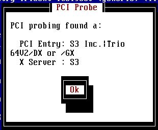
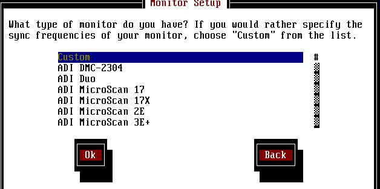
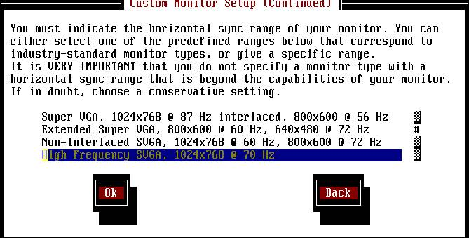
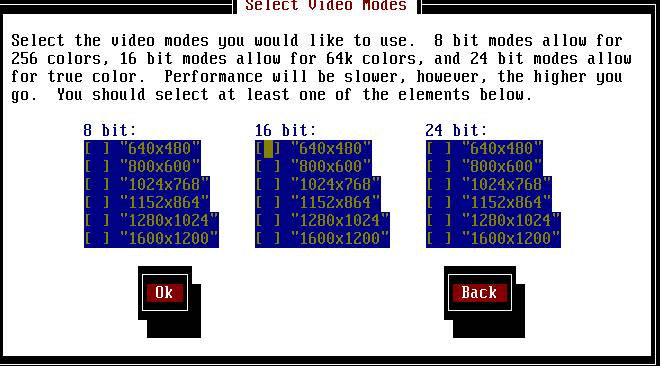

X window system 最早是由 1984 年的麻省理工学院（MIT）在发展一个可以让窗口接口适应多平台环境的一个计划（Project Athena），所发展的一套窗口系统。到今日我们所常听到的 X-Window 通常是指 X11R6 这一版的 X 系统。X windows 有下列几种别称：而 X-Window 在运作的时候，必须要下面几种档案：
- X
- X window system
- X Version 11
- X Window System, Version 11
- X11
而通常我们所使用的 X ，由于是由 XFree86 Project Inc. 公司为支持 Intel x86 平台的原始码系统，所以就被通称为 XFree86 系统啦！目前最常被使用的是 XFree86-3.3.6 版，这一版是比较稳定的版本，另外，如果你的显示适配器太新的话，你就必须要下载更新的 XFree86 啦，目前最新的出到了 4.1.0 版了！一些常去的 FTP 下载网站你可以在底下找到：另外，你以可以上 XFree86 的网站去逛逛！
- X Server：这是 X-Window 最重要的一个程序了，主要在负责所有与 X-Windows 有关的接口显示功能；
- X Client：客户端程序；
- X protocol：主要负责 X 的一些协议咚咚；
- X Lib：一些 X 的数据库！
除此之外，X-Window 相关的设定与档案都在：
这两个目录中，其中，关于 X 的配置文件就在 /etc/X11/XF86config 这个档案中！
- /usr/X11R6
- /etc/X11
如果你是使用这个网页所提供的光盘来安装你的 Linux ，并依鸟哥建议的安装方法来安装 Linux 时，那在你安装完毕之后应该就已经有 XFree86-3.3.5-3 版的 X-Window 系统了！如果你是使用一些早期比较常用的显示适配器，例如 S3 Virge 系列的卡，那应该在安装的时候就已经设定好 X-Window 了，果真如此的话，只要打 startx 就可以开始你的窗口接口的 Linux 啰！如果你的卡是比较新款的显示适配器，故而 Linux 无法直接帮你装好，那么你只好自己来作设定了！设定的方法有很多种，包括有以下的几种程序（请注意大小写喔！）：
比较要注意的是 XF86Setup 为图形接口的设定 X-Window 的设定程序，如果你的 X-Window 没有办法跑的话， XF86Setup 应该就没有办法执行了！基本上，由于 Xconfigurator 比较容易设定，所以我会建议你先以 Xconfigurator 这一支程序来测试一下你的 X-Window，如果可以跑的话就OK了！如果以 Xconfigurator 没有办法设定好的话，就必须以 xf86config 来设定你的 X 了！而设定完了 X 之后，你可能会想要改变显示器的色度，那你就可以用手动的方式来修改啰！通常我会建议你以以下的步骤来设定你的 X-window：
- Xconfigurator
- xf86config
- XF86Setup
方法一：使用 Xconfigurator 设定 X-Window
- 先以 Xconfigurator 来设定；
- 若不行，再以 xf86config 来设定；
- 还不行，则只好手动 /etc/X11/XF86config 档案！
- 执行 Xconfigurator ：
这个时候会出现一个欢迎画面，按下 OK 之后，系统会自动去捉显示适配器的芯片组。
- 如果显示适配器是这一版的 XFree86 有支持的话，那系统就会显示出你的显示适配器型号，如下图所示为 S3 的 Trio64v2 芯片：

- 上图按下 OK 之后会开始去设定显示器（屏幕），一般我们都用自定义的方法去捉屏幕，所以选择 Custom 手动设定（第一项），如下图所示：

- 按下 OK 之后，系统会告诉你一些讯息，再按下 OK 后，就会出现如下的画面，告诉你应该要选择哪一个屏幕的分辨率，通常我们都会选择『High Frequency SVGA, 1024x768 @ 70Hz 』那一个选项。

- 上图按下 OK 之后，就会要求你选择垂直分辨率，通常我们都是选择第二项，也就是 50-90 那一项即可；
- 再来系统会问你是否要让 XFree86 自己捉显示适配器相关的信息？这里可以按 Probe 也可以按 Don't Probe ，只是，如果你确切的知道你的显示适配器内存的大小的话，这里建议选择 Don't Probe；
- 上一步骤选择 Don't Probe 之后，系统会要你选择你的内存，请依你的显示适配器内存实际大小输入，如果是 S3 Vrige 的话，通常是 1M 或者是 2M 左右吧！
- 选完了内存大小之后，过来是选择你的记忆频率芯片，由于我们通常不是很清楚我们的芯片是哪一个，所以这里只好让系统自己捉，如下图，直接选择 No Clockchip Setting 即可！

- 再来则是选择画面分辨率与色彩量，如下图所示，一般而言，如果你的 X-Window 一直有问题，这里可以选择 8 bit，及 640x480 的最原始设定就好！如果你的 X-Window 没有问题，可以正常的使用了，而你觉得你想要让你的色彩最大化，则可以仅选择 24 bit 及 1024x768 这一项即可！如此一来，你就可以以你最喜欢的分辨率与色度进入 X-Window 啦！（注意喔，在 bit 之间以 tab 键移动，而以 空格键 确定！）

- 接着下来系统告诉你要开始测试 X-Windows 啦，按下 OK 之后系统就开始测试 X-Window！在这个地方要注意一下，如果你的设定不完全，则系统将会回到第三步骤重新再设定，如果你在这一个步骤重复了三次以上仍无法设定成功，那就必须以 xf86config 这支程序设定了！
- 如果你可以正常的看到一个光标及一个框框告诉你还有10秒钟的时间可以按确定，那就表示你的 X-Window 可以用啦！这个时候请选择 OK，然后出现的另一个框框告诉你：『是否要在下次开机的时候以图形接口登入』，这一步千万选择『NO』，因为以 X-Window 为默认的开机接口，个人觉得并不好，因为不但占用了较多的系统资源，而且，并不会比较好使用！
- 完成设定了，跳出 Xconfigurator 后，以 startx 进入 X-Window ！
方法二：使用 xf86config 设定 X-Window如果你的 X-Window 并无法以 Xconfigurator 这个比较容易设定的程序设定的话，你只好选择 xf86config 这个文本模式的程序来设定了！整个流程我们将他写在底下，因为很长，所以有些部分被我舍弃掉了！（注意，如果有一个步骤作错的话，请按 ctrl+c 退出后，在从头开始作吧！）
方法三：手动修正一些错误
[root@tsai /root]# xf86config <== 这里输入 xf86config
step 1：
底下会出现一大串字，不用理他
Press enter to continue, or ctrl-c to abort. <== 这里按 enterstep 2：
1. Microsoft compatible (2-button protocol)
2. Mouse Systems (3-button protocol)
3. Bus Mouse
4. PS/2 Mouse
5. Logitech Mouse (serial, old type, Logitech protocol)
6. Logitech MouseMan (Microsoft compatible)
7. MM Series
8. MM HitTablet
9. Microsoft IntelliMouse
10. Acecad tablet
Enter a protocol number: <==这里按 2 或 4（依你的鼠标而定）step 3：
Do you want to enable Emulate3Buttons? <==问你要模拟成三钮吗
因为没必要模拟成三钮，所以选 n 即可step 4：
Mouse device: <==这里也按 enter 用默认值就好了step 5：
Do you want to use XKB? <==按 enter
Press enter to continue, or ctrl-c to abort. <==按 enterstep 6：
1 Standard 101-key, US encoding
2 Microsoft Natural, US encoding
3 KeyTronic FlexPro, US encoding
4 Standard 101-key, US encoding with ISO9995-3 extensions
5 Standard 101-key, German encoding
6 Standard 101-key, French encoding
7 Standard 101-key, Thai encoding
8 Standard 101-key, Swiss/German encoding
9 Standard 101-key, Swiss/French encoding
10 Standard 101-key, US international
11 Brazilian ABNT2
12 None of the aboveEnter a number to choose the keymap.
<==共有 12 种键盘选择，这里选择 1 即可
Press enter to continue, or ctrl-c to abort.<==按 enterstep 7：
1 31.5; Standard VGA, 640x480 @ 60 Hz
2 31.5 - 35.1; Super VGA, 800x600 @ 56 Hz
3 31.5, 35.5; 8514 Compatible, 1024x768 @ 87 Hz interlaced (no 800x600)
4 31.5, 35.15, 35.5; Super VGA, 1024x768 @ 87 Hz interlaced, 800x600 @ 56 Hz
5 31.5 - 37.9; Extended Super VGA, 800x600 @ 60 Hz, 640x480 @ 72 Hz
6 31.5 - 48.5; Non-Interlaced SVGA, 1024x768 @ 60 Hz, 800x600 @ 72 Hz
7 31.5 - 57.0; High Frequency SVGA, 1024x768 @ 70 Hz
8 31.5 - 64.3; Monitor that can do 1280x1024 @ 60 Hz
9 31.5 - 82.0; Monitor that can do 1280x1024 @ 76 Hz
10 31.5 - 95.0; Monitor that can do 1280x1024 @ 85 Hz
11 Enter your own horizontal sync rangeEnter your choice (1-11): <==选择分辨率，同样选 7 即可！
1 50-70
2 50-90
3 50-100
4 40-150
5 Enter your own vertical sync rangeEnter your choice: <==选择分辨率，选 2 即可！
Enter an identifier for your monitor definition:<==按 enter
Enter the vendor name of your monitor:<==按 enter
Enter the model name of your monitor:<==按 enterstep 8：
Do you want to look at the card database? <==这里选 y 开始看你的显示适配器型号506 S3 86C391 (Savage3D) Generic VGA
507 S3 86C764 (generic) S3 Trio64
508 S3 86C765 (generic) S3 Trio64V+
509 S3 86C775 (generic) S3 Trio64V2
510 S3 86C785 (generic) S3 Trio64V2
511 S3 86C801 (generic) S3 801/805
512 S3 86C805 (generic) S3 801/805由于我们使用的卡是 S3 Trio64V2 的卡，所以一直按 Enter 到大概 509 的
地方就会出现 S3 Trio64V2 这个卡！选 509 后按 enterPress enter to continue, or ctrl-c to abort.<==按 enter
step 9：
1 The XF86_Mono server. This a monochrome server that should work on any
VGA-compatible card, in 640x480 (more on some SVGA chipsets).
2 The XF86_VGA16 server. This is a 16-color VGA server that should work on
any VGA-compatible card.
3 The XF86_SVGA server. This is a 256 color SVGA server that supports
a number of SVGA chipsets. On some chipsets it is accelerated or
supports higher color depths.
4 The accelerated servers. These include XF86_S3, XF86_Mach32, XF86_Mach8,
XF86_8514, XF86_P9000, XF86_AGX, XF86_W32, XF86_Mach64, XF86_I128 and
XF86_S3V.These four server types correspond to the four different "Screen" sections in
XF86Config (vga2, vga16, svga, accel).5 Choose the server from the card definition, XF86_S3.
Which one of these screen types do you intend to run by default (1-5)?
上面告诉你共有五种型式的卡供你选择，第五项 XF86_S3 是你选择的！所以这里
选 5 就好了，如果你不知道你的卡是哪一个，那就选 4 试试看吧！step 10：
Do you want me to set the symbolic link? <==这里按 ystep 11：
1 256K
2 512K
3 1024K
4 2048K
5 4096K
6 Other
Enter your choice: <==按你的显示适配器而定，不知道的话可以选 3 试看看step 12：
Enter an identifier for your video card definition:<==按 enter
Enter the vendor name of your video card:<==按 enter
Enter the model (board) name of your video card:<==按 enterstep 13：
Press enter for the next page, q to quit without selection of a RAMDAC.
不知道我们的 RAMDAC 所以选 q 离开即可step 14：
What Clockchip setting do you want (1-12)? <==按 q 即可
Press enter to continue, or ctrl-c to abort. <==按 enterstep 15：
"640x480" "800x600" "1024x768" for 8bpp
"640x480" "800x600" for 16bpp
"640x480" for 24bpp
"640x400" for 32bppNote that 16, 24 and 32bpp are only supported on a few configurations.
Modes that cannot be supported due to monitor or clock constraints will
be automatically skipped by the server.1 Change the modes for 8pp (256 colors)
2 Change the modes for 16bpp (32K/64K colors)
3 Change the modes for 24bpp (24-bit color, packed pixel)
4 Change the modes for 32bpp (24-bit color)
5 The modes are OK, continue.
Enter your choice:
如果要避免麻烦，直接按 5 使用默认值就可以了！step 16：
Shall I write it to /etc/X11/XF86Config? <== 按下 y在上面上下 y 之后，就完成了设定啦！
完成上面的设定之后，你就可以尝试着打 startx 看看是否可以启动 X-Window 啦，如果还是不行的话，就在从头设定一次吧！
其实，不论你使用哪一种程序修改 X-Window 的设定，都是在修改 /etc/X11/XF86Config 这个配置文件，在进行这个档案的修改工作之前，请先将你的文件备份吧！免得改错了就不得了了！在这个档案中，最需要注意的大概只有几个部分（其他的我也不是很懂呀！）：monitor、device 跟 screen ，主要的部分有点像这样：
monitor:
device:要注意的是上面显示黄色的部分，而底下的部分比较麻烦，最好是由 Xconfigurator 设定就好，不要随意改变。
Section "Monitor" Identifier "My Monitor"
VendorName "Unknown"
ModelName "Unknown"HorizSync 31.5 - 57.0
VertRefresh 50-90
# 800x600 @ 72 Hz, 48.0 kHz hsync
Modeline "800x600" 50 800 856 976 1040 600 637 643 666 +hsync +vsync# 1024x768 @ 60 Hz, 48.4 kHz hsync
Modeline "1024x768" 65 1024 1032 1176 1344 768 771 777 806 -hsync -vsync# 640x480 @ 100 Hz, 53.01 kHz hsync
Modeline "640x480" 45.8 640 672 768 864 480 488 494 530 -HSync -VSync
screen:上面的设定是我另一台机器的 Linux 设定，使用的是 SIS 6326 芯片，而有 8M 的内存，不过不知为何，上面的内存项目（黄色）备批注掉了（#符号为批注，不会被执行）。如果你知道如何变换的话，可以从这里去修改你的显示适配器！
# Device configured by Xconfigurator: Section "Device"
Identifier "Silicon Integrated Systems [SiS]|86C326"
VendorName "Unknown"
BoardName "Unknown"
#VideoRam 8192
Option "no_accel" # Use this if acceleration is causing problems
# Option "fifo_moderate"
# Option "fifo_conserv"
# Option "fifo_aggresive"
# Option "fast_vram"
# Option "pci_burst_on"
# Option "xaa_benchmark" # DON'T use with "ext_eng_queue" !!!
# Option "ext_eng_queue" # Turbo-queue. This can cause drawing
# errors, but gives some accel
# Insert Clocks lines here if appropriate
EndSection其他疑难解答：上面的设定跟你最终在屏幕上输出的分辨率有关，主要是黄色的部分，Depth是指你的色彩度，而 Modes 是分辨率，你可以依照自己的喜好来设定。
# The Colour SVGA server Section "Screen"
Driver "svga"
# Use Device "Generic VGA" for Standard VGA 320x200x256
#Device "Generic VGA"
Device "Silicon Integrated Systems [SiS]|86C326"
Monitor "My Monitor"
Subsection "Display"
Depth 32
Modes "800x600"
ViewPort 0 0
EndSubsection
EndSection
- 基本上，如果你出现了没有办法解决的问题时，你可以先以 xf86config 设定，设定完成了之后再以手动的方式去修改你的 screen 项目，基本上可能会出现的问题应该是出自于 Display 这一项，尽量将你的 Subsection 的情况订定的简单一点，最好是只有一个 Models 的情况！那样可能可以让你成功的达成开启 X-Window 的任务喔！
- 另外，如果你的画面大到整个屏幕之外，要用鼠标才能移动到周围的话，你可以将 Modes 那一项调成只有 "1024x768" 这一个，就可以将整个画面融入了！
好啦，我们知道 X-Window 主要是以 XFree86 这个 server 所提供的咚咚，另外也已经知道如何设定 X-Window 了，那要如何升级 X-Window 呢？再者，如果我们不使用原有的 X-server 的话，那要如何更新到新版的 x-window 呢？如果你是使用这个网页所提供的 RedHat 6.1 作为你 Linux 的操作系统，而且你的安装方法是使用所有的东西都安装的方法，另外，你使用的显示适配器是比较旧的 S3 系列的卡，那很好，你已经有 X-Window 3.3.5-3 的套件了！接下来你只要去设定 XFree86 就可以正常启动 x-window 啦！（其实，如果你使用较旧的机器，而且安装的方法使用这个网页的话，其实在安装的时候应该就已经可以看到 X-Window 的画面了！）
如果你虽然使用 RedHat 6.1 ，但是你的显示适配器是比较新的卡，以目前的显示适配器接口来说，可能是 GeForce2 MX 这块卡，由于 NVIDIA 的产品是比较新的显示适配器，所以除了以新版的 XFree86 Server 来增加你的显示适配器支持度外，也可以先更新 XFree86 到 4.0.1 以后的版本，才来安装这张显示适配器！升级完了 XFree86 后再到底下的『安装 NVidia 的显示适配器核心程序』去更新这个新的显示适配器核心程序！
那如果你要升级你的 X-Window 系统呢？例如你要将你的 XFree86 升级到最新的 4.1.0 版的话，那要如何升级呢？你可以依底下的步骤来做做看：注意了，如果你是由鸟哥的这个网页所下载的档案（Linux-ix86-glibc21.tar.gz），则你必须先解压缩，假设你的档案放置在 /test 底下，则：
- 确认你的 X-Window 版本：你要做的是，先确认你的 X-Window 的版本，先以 rpm 确认一下你的 XFree86 这个软件，并将 Xinstall.sh 这个档案捉到你的 Linux 系统中，更改 Xinstall.sh 成为可执行的档案，然后以 root 的身份执行：
如果你是以这个网页提供的 RedHat 6.1 来安装的话，你的屏幕应该会显示如上面这一个咚咚，上面显示了 XFree86 的版本为 3.3.5-3 ，而我们的 Linux 版本为 2.2.12-20，而 X-Window 的版本为 Linux-ix86-glibc21 这一个东西。（另外要注意的是，如果你是使用 RedHat 7.0 的话，你的 X-Window 版本已经变成了 Linux-ix86-glibc22 了！）
[root @tsai /tmp]# rpm -q XFree86
XFree86-3.3.5-3
[root @tsai /tmp]# chmod 744 Xinstall.sh
[root @tsai /tmp]# ./Xinstall.sh -check
Checking which OS you're running...
uname reports 'Linux' version '2.2.12-20', architecture 'i586'.
Object format is 'ELF'. libc version is '6.1.2' (6.1).Binary distribution name is 'Linux-ix86-glibc21'
- 下载你的 X-Window 版本的核心程序：你可以到几个比较有名的 FTP 站去下载最新的 X-Window 版本，或者由鸟哥这个网页下载你所需要的咚咚：
基本上，在各大 FTP 站中，你所要下载的东西，除了在各版本底下的主要执行档与说明档之外（就是 Xinstall.sh 等档案），其他要下载的只是在 binaries 底下的核心程序文件，只要选择适合你的档案就可以了！
- 教育部：ftp://nctuccca.edu.tw/UNIX/XFree86/
- XFree86 组织：ftp://ftp.xfree86.org/pub/XFree86
- 这个网页提供的是 XFree86 4.1.0 版的东西：
- Linux-ix86-glibc21.tar.gz：主要是 RedHat 6.1 以前版本所使用的 X-window 核心；
- Linux-ix86-glibc22.tar.gz：主要是 RedHat 7.0 以后版本使用的 X-window 核心。
上面步骤会产生 Linux-ix86-glibc21 这个目录，里面就是我们所需要的 X-window 的核心啦！
[root @tsai XFree86]# tar -zxvf Linux-ix86-glibc21.tar.gz
在选择完了你的 X-Window 套件之后，再来就是要安装了！以下的安装是针对 4.1.0 的 X-Window 版本，而且是在 RedHat 6.1 中，以 Linux-ix86-glibc21 核心进行安装的步骤！
- 备份你的 X-Window 系统：做事情总是有备而无患的！由于安装新的 X-Window 核心时，会将旧的版本覆盖掉，所以如果新的版本无法安装完成，或者是新的版本你使用的不愉快时，要换回旧版的 X-window 就要重新安装一次！很麻烦，所以最好是将你的旧版 X-window 备份。假设你要将备份的东西存在 /backup 中，则：
则在你的 /backup/x-window 下会有两个文件名为：X11R6.tar.gz 及 X11.tar.gz 的档案！
[root @tsai /test]# mkdir /backup
[root @tsai /test]# cd /backup
[root @tsai /backup]# mkdir x-window
[root @tsai /backup]# cd x-window
[root @tsai x-window]# tar -zcvf X11R6.tar.gz /usr/X11R6
[root @tsai x-window]# tar -zcvf X11.tar.gz /etc/X11
- 离开 X-window 系统：如果你是以 X-window 为预设的开机登入情况，则你必须修改成 init 3 的等级登入，总之，就是要进入成文本模式，并且 X-window 不能在使用的状态下才能升级！
- 开始安装：
- 在刚刚我们捉下来的 Linux-ix86-glibc21 的目录中执行 Xinstall.sh 这个档案：
[root @tsai /test]# cd /test/XFree86/Linux-ix86-glibc21
[root @tsai Linux-ix86-glibc21]# chmod 744 Xinstall.sh
[root @tsai Linux-ix86-glibc21]# ./Xinstall.sh- 开始整个流程可以如下的几个步骤表示：（注意：由于新版的 XFree86 我动手装了好几次，都没有办法成功，所以基本上，用这个程序的默认值就可以了，也就是一直按 enter 即可，这样就不会造成你的 X-Window 被改乱掉的困扰喔！）
step 1:
If you are installing a version different from 4.1.0, you
may need an updated version of this installer script.
Do you wish to continue? (y/n) [n] y <== 这里输入 ystep 2:
You appear to have an existing installation of X. Continuing will
overwrite it. You will, however, have the option of being prompted
before most configuration files are overwritten.
Do you wish to continue? (y/n) [y] y <== 这里输入 ystep 3:
Do you want to move them to /etc/X11 and create the necessary
links? (y/n) [y] <== 这里输入 ystep 4:
== Extracting /test/XFree86/Linux-ix86-glibc21/Xetc.tgz ==
Do you want to overwrite the app-defaults config files? (y/n) [n]
上面在问你，你是否要将前一版的 X-window 设定留下？
如果你只是升级，那就按 n 即可，如果你想要重头安装，
这里可以按 y ，只要后面就要重新设定 x-window 了！
后面的步骤（到步骤 13 都是这种情况！）step 5:
Do you want to overwrite the fs config files? (y/n) [n]step 6:
Do you want to overwrite the lbxproxy config files? (y/n) [n]step 7:
Do you want to overwrite the proxymngr config files? (y/n) [n]step 8:
Do you want to overwrite the rstart config files? (y/n) [n]step 9:
Do you want to overwrite the twm config files? (y/n) [n]step 10:
Do you want to overwrite the xdm config files? (y/n) [n]step 11:
Do you want to overwrite the xinit config files? (y/n) [n]step 12:
Do you want to overwrite the xsm config files? (y/n) [n]step 13:
Do you want to overwrite the xserver config files? (y/n) [n]step 14:
Do you want to install Xfsrv.tgz (font server)? (y/n) [y]
这个是跟 X server 有关的档案，没有其他要求的话，直接都按 y 吧！
以下的都是与 X server 有关的咚咚！
Do you want to install Xnest.tgz (Nested X server)? (y/n) [y]
Do you want to install Xprog.tgz (programmer support)? (y/n) [y]
Do you want to install Xprt.tgz (X print server)? (y/n) [y]
Do you want to install Xvfb.tgz (Virtual framebuffer X server)? (y/n) [y]step 15:
Do you want to install Xf100.tgz (100dpi fonts)? (y/n) [y]
这个是 X windows 的字型，以下都是属于字形的部分，请选 y 吧！
Do you want to install Xfcyr.tgz (Cyrillic fonts)? (y/n) [y]
Do you want to install Xfscl.tgz (Scaled fonts (Speedo and Type1))? (y/n) [y]
Do you want to install Xhtml.tgz (Docs in HTML)? (y/n) [y]
Do you want to install Xjdoc.tgz (Docs in Japanese)? (y/n) [y]
Do you want to install Xps.tgz (Docs in PostScript)? (y/n) [y]step 16:
Do you wish to have the (new) links installed (y/n)? [n]
这个地方在告诉你，是否需要将一些档案连结到 /usr/lib 或
/usr/include，注意，一旦选择y就会有档案被覆盖掉。step 17:
Do you wish to have this link installed (y/n)? [n]step 18:
Do you want them moved to /usr/X11R6/lib/modules/old?
Note: that if you want to use them with 3.3.x again, you'll
need to move them back manually. (y/n) [n]step 19:
Installation complete.- OK啦！这样就安装完毕了！
- 重新设定 XFree86：接着下来，由于我们升级了 XFree86 ，所以接下来要开始重新的设定 XFree86 了，设定的方法虽然有点不太一样，但是同样是使用 xf86config 这一个咚咚来设定！如果你的显示适配器是 NVidia GeForce2 MX 的话，请在看到：
这一行的时候，请持续按 enter 到大概是 320 的时候，会显示 GeForce 的字样，选这个就对了！不过在选择显示分辨率的时候，最好调成 1024*768 那一个，画面就不会移来移去了！
Do you want to look at the card database?
- 开始进行 Check 的工作：基本上，安装完毕之后，需要执行 『XFree86 -configure』 来确认你有没有安装好，但是，奇怪的是，我每次执行都会出现有问题？不过 X-Windows 倒是可以执行。
使用手动的升级虽然可以避免一些编译上面的问题，不过，毕竟如果有 i386.rpm 或 src.rpm 等等的档案的话，就会更简单的升级了！你可以上各大 FTP 站去下载最新的 XFree86 的咚咚！然后执行编译各 *.src.rpm 程序，等到编译没有问题之后，直接在 /usr/src/redhat/RPMS/i386 中安装你的 rpm 档案吧！
基本上经过了 Xconfigurator 及 xf86config 的设定工作之后，你的 X-Window 应该可以正常工作了，但是如果你使用的是 NVidia GeForce2 MX 这一张目前市面上最常见到的卡呢？由于旧的 X-Window 的 Server 并不支持 GeForce 的核心，所以你是一定没有办法进入 X-Window 的！那要怎样让这张卡可以支持 X-Window 呢？有几个工作你要先注意：
- 升级你的 rpm 程序：由于 NVIDIA 的驱动程序太新了，所以需要 rpm 4.0.2 以后版本的 rpm 程序，但是我们 RedHat 6.1 里面附的 rpm 是 3.0.3-2 ，所以你要先升级 rpm 才行，升级的办法请看这里：
- 升级你的 XFree86 ：基本上，以上面的方法来升级就好了，更要注意的是，由于使用 Xinstall.sh 来手动升级的时候，如果你不用这个程序默认的选项（除了第一项选择 y 之外），是会有一点小麻烦的，所以建议你最好是直接按 enter 就好了！
- 下载 NVidia 核心：鸟哥这里有已经下载的两个档案，是 src.rpm 的档案，你可以点选底下的线条下载：
NVIDIA_kernel-1.0-1251.src.rpm
NVIDIA_GLX-1.0-1251.i386.rpm- 开始编辑核心程序：好了，下载完了 NVIDIA_kernel 之后，请先以 rpm 编译吧！
上面的程序编译完之后会在 /usr/src/redhat/RPMS/i386 产生一个名为 NVIDIA_kernel-1.0-1251.i386.rpm 的档案，这时请以：
rpm --rebuild NVIDIA_kernel-1.0-1251.src.rpm 安装完了之后，回到你刚刚下载核心的目录，开始安装 GLX 这个档案，注意喔，由于 GLX 需要一些特别的档案来升级，不要理他！用强制安装的方法：
rpm -ivh NVIDIA_kernel-1.0-1251.i386.rpm 这个时候就可以完成显示适配器核心的更新了！更新完成之后，就会在你的 /usr/X11R6/lib/modules/drivers 内多了一个名为 nvidia_drv.o 的档案，这就是我们要的显示适配器驱动程序啦！
rpm -ivh --nodeps NVIDIA_GLX-1.0-1251.i386.rpm
- 再重新设定一次 xf86config ：由于我们重新安装了 XFree86 ，所以你必须要使用 xf86config 再重新设定一次，然后在选择显示适配器的地方选择地 320 款那一项（Geforce），就 OK 啦！
- 手动更改 /etc/X11/XF86Config 档案：这一个步骤比较讨厌，因为必须要使用 vi 去修改你的 X-Window 配置文件，以 vi /etc/X11/XF86Config 进入编辑画面，然后找到类似下面的片段：
将上面『Load"glx"』这一行之前的批注符号『#』拿掉！亦将 ModulePath "/usr/X11R6/lib/modules" 的批注拿掉，然后，最重要的是在第三部分，将原先的 nv 改成 nvidia ，而将 VideoRam 的内存改成你的内存大小（一般来说应该是 32768 => 32MB），然后将批注拿掉。最后在第四部分的地方，你可以将 DefaultDepth 改成 24 （bit）而将底下的 Modes 改成 "1024x768" ，这样每次启动 X-Window 就可以看到最大的画面啦！
--------------------第一部份---------------------------------------------
Section "Module"# This loads the DBE extension module.
Load"dbe" # Double buffer extension
# This loads the miscellaneous extensions module, and disables
# initialisation of the XFree86-DGA extension within that module.
SubSection "extmod"
Option "omit xfree86-dga" # don't initialise the DGA extension
EndSubSection# This loads the Type1 and FreeType font modules
Load"type1"
Load"freetype"# This loads the GLX module
Load"glx"EndSection
--------------------第二部份---------------------------------------------
ModulePath "/usr/X11R6/lib/modules"--------------------第三部份---------------------------------------------
Section "Device"
Identifier "NVIDIA GeForce"
Driver "nv" <== 这里改成 nvidia
#VideoRam 4096 <== 这里改成你的内存量(32768)，并且将 # 取消
# Insert Clocks lines here if appropriate
EndSection
--------------------第四部份---------------------------------------------
Section "Screen"
Identifier "Screen 1"
Device "NVIDIA GeForce"
Monitor "My Monitor"
DefaultDepth 24Subsection "Display"
Depth 24
Modes "1024x768"
ViewPort 0 0
EndSubsection
EndSection
- 完成设定，以 startx 启动 X-Window ！
一些 FTP 站：
2002/ 01/01以来统计人数
- Q：？
A：
- 等待加入新讨论：